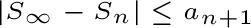

Alternating series are series in which the terms alternate between positive and negative.
Convergence:
Two conditions have to be met.
The n
th
term goes to 0
Each subsequent term is less than the one before
Error:
